Monteverde

Monteverde is the twelfth canton of the Puntarenas province of Costa Rica. It is located in the Cordillera de Tilarán mountain range. Roughly a four-hour drive from the Central Valley, Monteverde is one of the country's major ecotourism destinations.
Beautiful Photos in Monteverde

In Monteverde, you can find thousands of precious birds, one kind is Humming birds, a kind of birds that is native to the Americas and comprise the biological family Trochilidae

Scenary
- hanging bridges
- Beautiful birds
- Cloud forest
New York
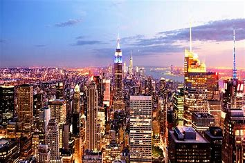New York, often called New York City or simply NYC, is the most populous city in the United States, located at the southern tip of New York State on one of the world's largest natural harbors.
It's famous for its tall buildings, like the Statue of Liberty and Times Square. There are lots of different neighborhoods with different cultures, and you can find everything from fancy shops in Manhattan to cool art in Brooklyn.
Photo Gallery
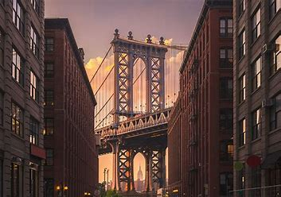 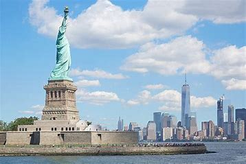 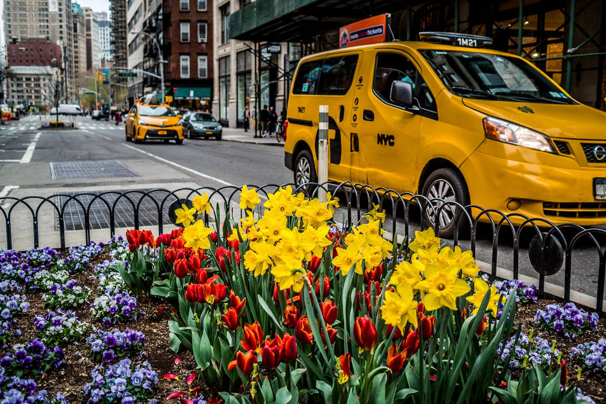 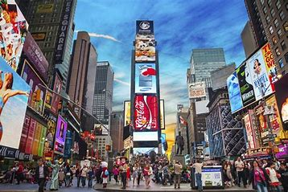Scenary
- Manhattan: Skyscrapers and Urban Jungle, Central Park
- Brooklyn: Brooklyn Bridge, Coney Island
- Queens: Flushing Meadows-Corona Park
- Bronx: The Bronx Zoo
- Staten Island: Staten Island Ferry
Paris
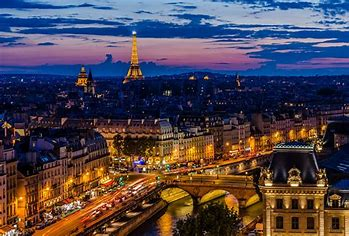Paris, the capital of France, is a city renowned for its timeless elegance, rich history, and cultural significance. Known as the "City of Light," Paris is a global center for art, fashion, gastronomy, and literature.
Its iconic landmarks, such as the Eiffel Tower, Notre-Dame Cathedral, and Louvre Museum, attract millions of visitors each year.
Photo Gallery
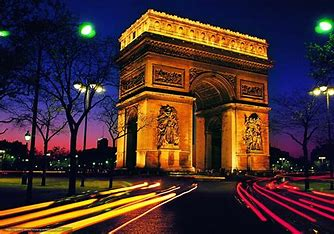 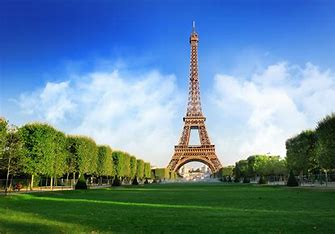 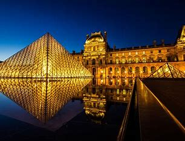 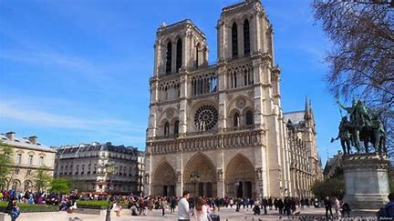Scenary
- Eiffel Tower
- Louvre Museum
- Notre Dame Cathedral
- The Arc De Triomphe
Osaka
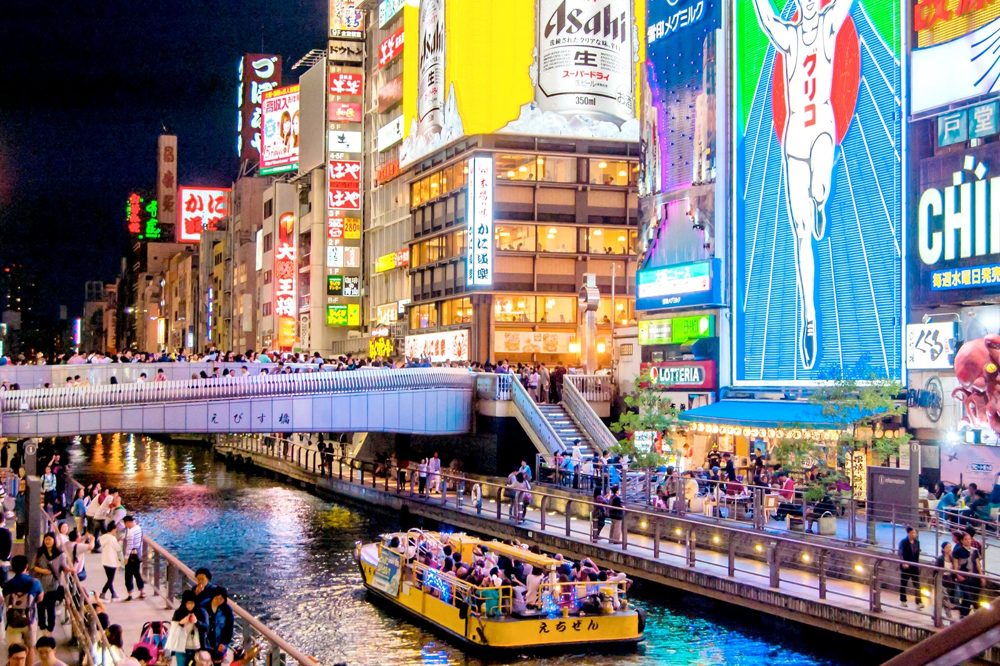Osaka, located in the Kansai region of Japan, is a dynamic and modern city known for its vibrant atmosphere, delicious street food, and historical landmarks.
Renowned as the "Kitchen of Japan," Osaka is a paradise for food enthusiasts. The city is famous for its street food, particularly takoyaki (octopus balls) and okonomiyaki (savory pancakes). Dotonbori is a haven for food lovers, featuring numerous restaurants, street stalls, and food markets.
Photo Gallery
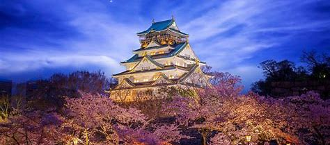 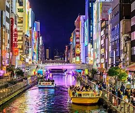
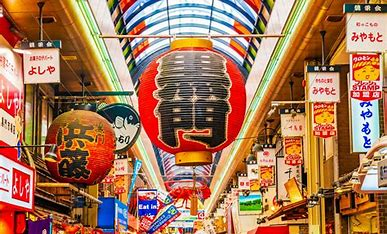
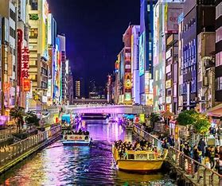
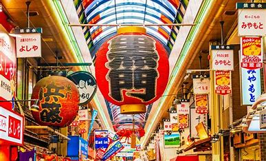
Scenary
- Osaka castle
- Dotonbori
- Ebisubashi-suji Shopping Street
- Kuromon Market
Tokyo
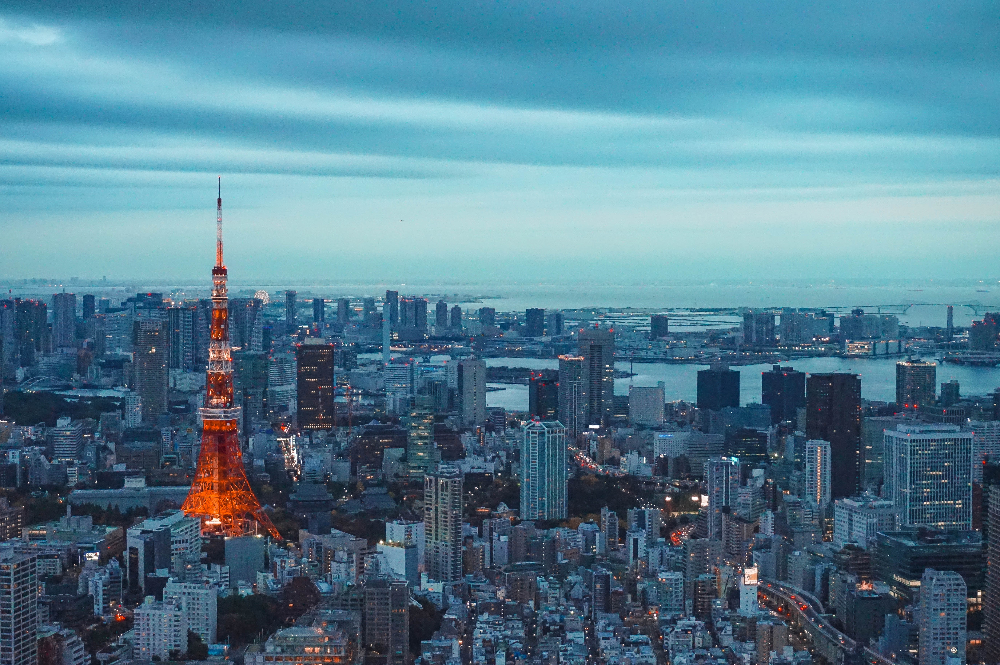Osaka, located in the Kansai region of Japan, is a dynamic and modern city known for its vibrant atmosphere, delicious street food, and historical landmarks.
Renowned as the "Kitchen of Japan," Osaka is a paradise for food enthusiasts. The city is famous for its street food, particularly takoyaki (octopus balls) and okonomiyaki (savory pancakes). Dotonbori is a haven for food lovers, featuring numerous restaurants, street stalls, and food markets.
Photo Gallery
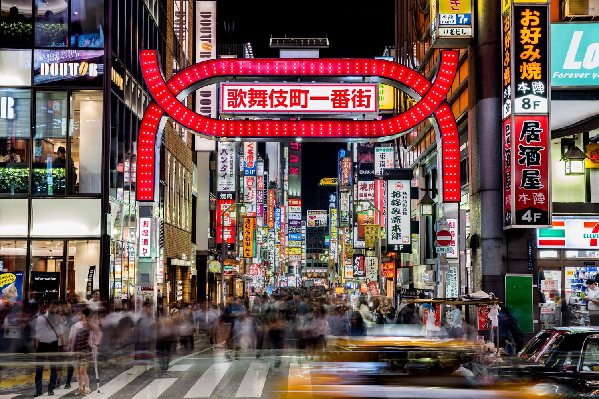 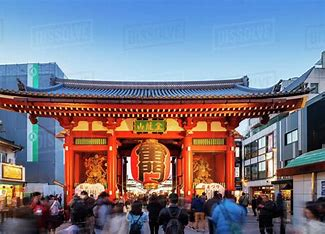 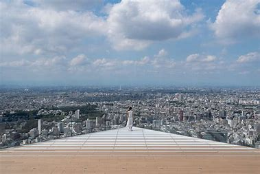 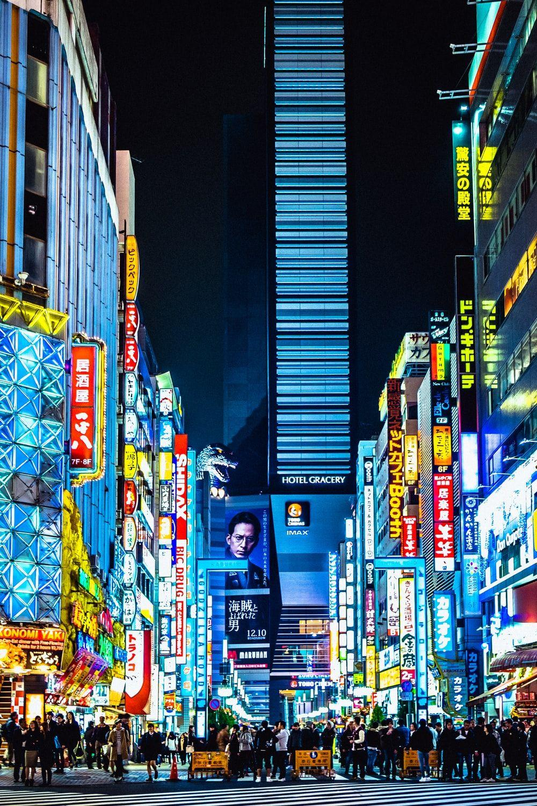 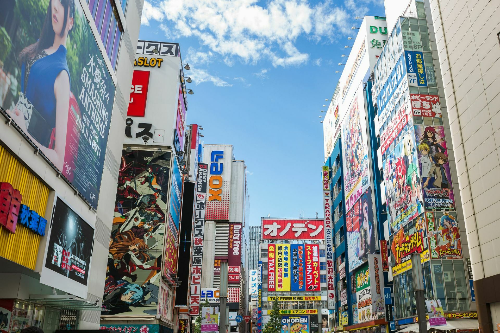Scenary
- Tokyo Kabukicho
- Tokyo Kaminarimon Gate
- Tokyo Shibuya Sky
- Tokyo Akihabara